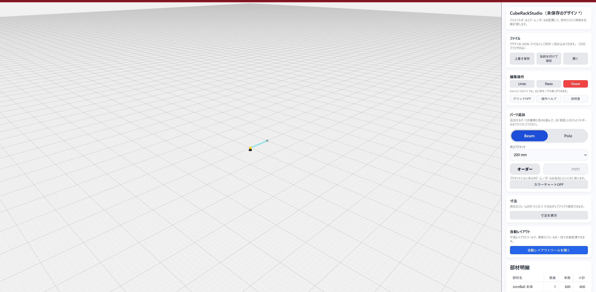
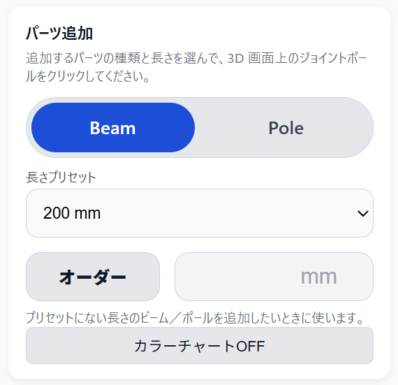
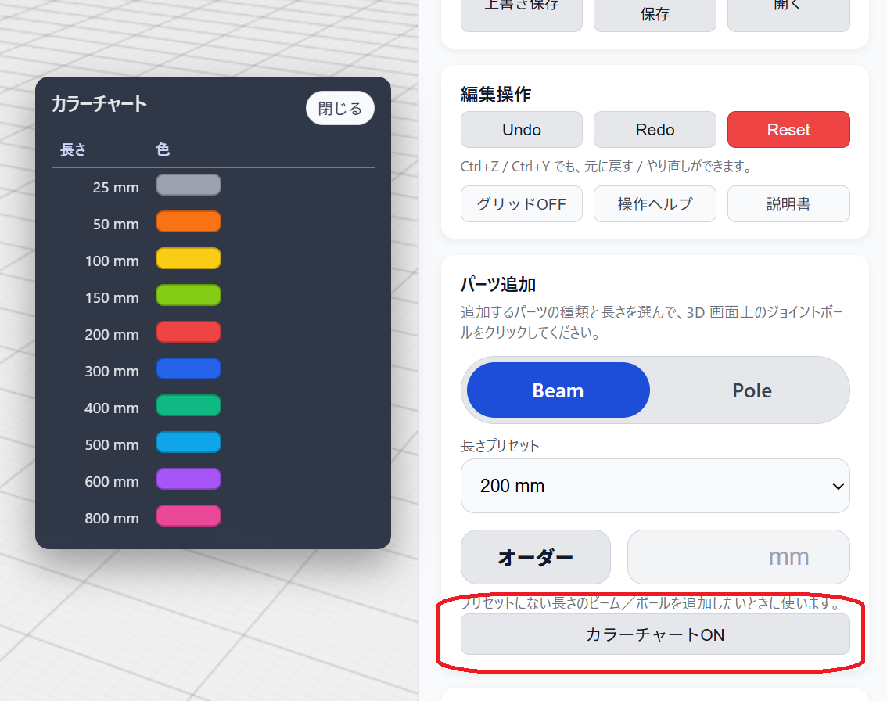
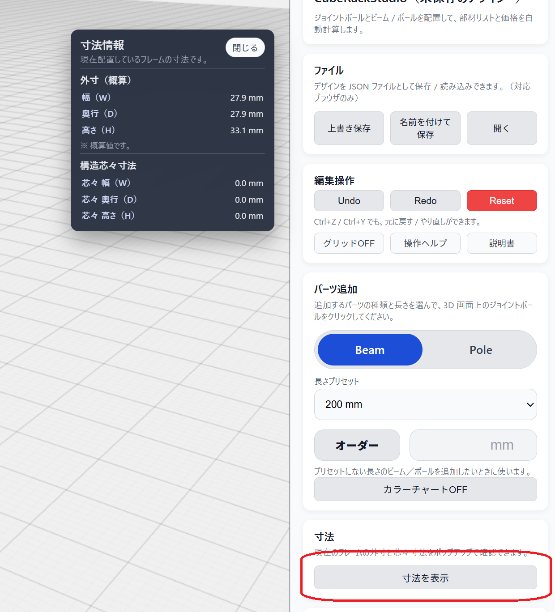
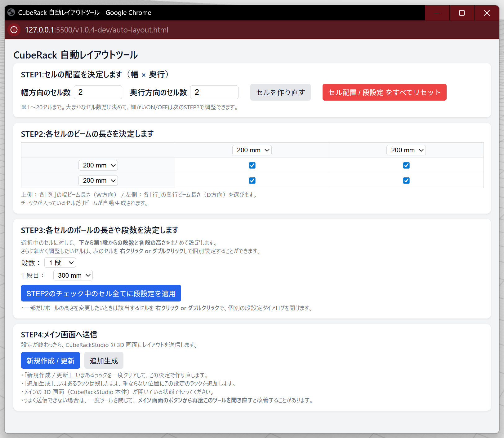

1. 画面の見方
- 左側：3D 画面…ラック構成を立体で確認します
- 右側：操作パネル…部材選択、長さ、見積り表示を行います

2. マウス操作
- 左ボタン + クリック：選択 / 追加などの決定
- 中ボタン + ドラッグ：視点を回転します
- 右ボタン + ドラッグ：画面を平行移動します
- ホイール：ズームイン / アウトします
マウス設定やタッチパッド操作により動作が異なる場合があります。
3. ファイル（保存 / 読み込み）
右パネル上部の「ファイル」からデザインを保存 / 読み込みできます。
- 上書き保存：現在のデザインを上書き保存します
- 名前を付けて保存：別名で保存します
- 開く：保存したデザインを読み込みます
※ ブラウザや環境によって、保存 / 読み込みの挙動が異なる場合があります。
4. 編集操作（Undo / Redo / Reset / グリッド / 操作ヘルプ）
- Undo：1つ前の状態に戻します（
Ctrl + Z） - Redo：やり直します（
Ctrl + Y） - Reset：すべて削除して初期状態に戻します
- グリッドON/OFF：床グリッドの表示を切り替えます
- 操作ヘルプ：画面内の簡易ヘルプを表示します
迷ったらまず Undo が安全です。Reset は最後の手段にしてください。
5. パーツ追加（Beam / Pole）
- 右パネルで Beam / Pole を選択
- 長さプリセット を選択
- 3D画面の ジョイント（球） をクリックして追加

補足：プリセットに無い長さを使う場合は「オーダー」をONにして mm を入力します（詳細は追記予定）。
6. カラーチャート

「カラーチャート」ボタンで、長さごとに割り当てられている色を確認できます。 部材色のルールを把握したいときに使います。
7. 寸法を表示

「寸法を表示」を押すと、現在のフレームの外寸と芯々寸法がポップアップで確認できます。
- 外寸：全体の大きさ（概算）
- 芯々寸法：構造の中心間の寸法
8. 自動レイアウトツール

「自動レイアウトツールを開く」から、別画面のレイアウトツールを起動できます。 複数モジュールをまとめて配置したいときに使います。
9. 見積の見方（部材明細）
右パネル下部の「部材明細」には、現在配置されている部材の 数量と概算金額が自動で表示されます。
パーツを追加・削除すると、見積は自動で更新されます。
- 部材名：使用しているパーツの種類
- 数量：配置されている本数
- 単価：1本あたりの価格
- 小計：数量 × 単価
一覧の下には、すべての部材を合計した 合計金額（税込）が表示されます。
この見積は参考価格（概算）です。実際の販売価格や仕様とは異なる場合があります。